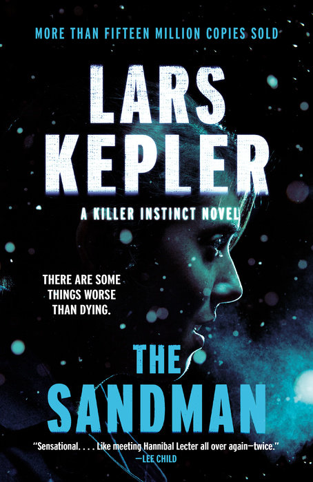

The Sandman
Now Apple TV's Nocturne · Premieres Fri, Oct 30, 2026
Late one night outside Stockholm, Mikael Kohler-Frost is found wandering, thirteen years after he and his younger sister went missing. Everyone assumed they were victims of Jurek Walter, Sweden's most notorious serial killer, now serving a life sentence in a maximum-security psychiatric hospital. Mikael says his sister is still alive, held by someone he knows only as the Sandman. Detective Inspector Joona Linna is certain Jurek has an accomplice, and the only agent who can get him to talk is Inspector Saga Bauer, a twenty-seven-year-old prodigy who must go undercover in the ward where he's locked up, and get to him before he gets inside her head. A #1 international bestseller in the Killer Instinct series.
“With its tight, staccato chapters and cast of dangerous wraiths lurking everywhere, The Sandman is a nonstop fright.”
— Janet Maslin, The New York Times
Praise as quoted in the Penguin Random House description. Series details from Apple TV Press.
Now Apple TV's Nocturne: Liev Schreiber, Zazie Beetz and Stephen Graham, with the story moved to western Pennsylvania, premiering Friday, October 30. Read the Swedish original first, and leave a light on.
Buy NowTip the Booktender